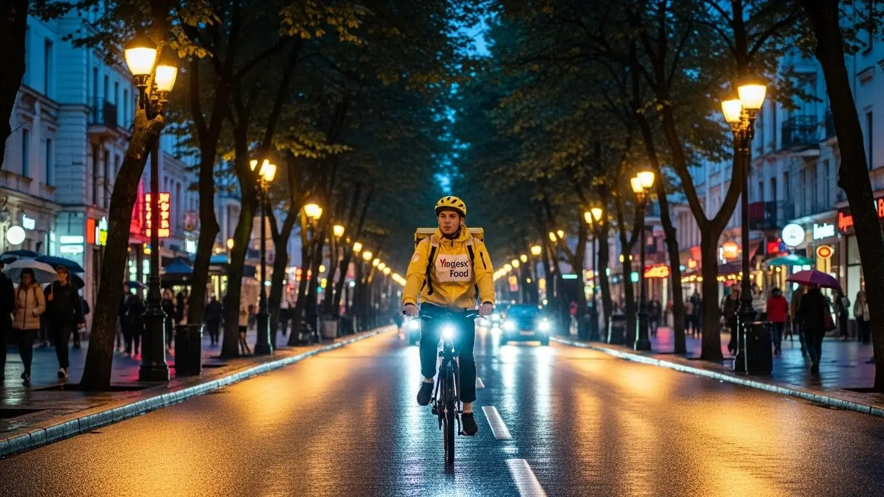

Работа курьером Яндекс Еды в Хабаровске: доход и условия в 2025-2026

- Работа курьером Яндекс Еды в Хабаровске: для кого эта вакансия и что вы получите
- Сколько вы будете зарабатывать курьером в Хабаровске: калькулятор дохода и разбор выплат
- Реальный заработок курьера в Хабаровске: смены и месячный доход
- График работы и форматы занятости
- Требования к кандидату и документы
- Самозанятость, налоги и юридическая чистота
- Пошаговое оформление и первый выход на линию в Хабаровске
- Пешком, на вело или на авто: что выгоднее в Хабаровске
- Районы, маршруты и «топовые» зоны заказов в Хабаровске
- Безопасность, страховка, штрафы и оплата простоя
- Плюсы и возможные минусы работы курьером в Хабаровске
- Реальные истории и отзывы курьеров из Хабаровска
- Ответы на главные вопросы о работе курьером Яндекс Еды в Хабаровске
- Короткие ответы на главные вопросы
- Заключение: твой старт в Хабаровске
Все города
Думаешь, работа курьером в Хабаровске — это просто сел на велик и поехал рубить бабло? А потом удивляешься, почему доход едва покрывает ремонт подвески после наших дорог, половина смены уходит на пробки на Муравьева-Амурского, а за непонятный штраф списали дневную выручку? Забудь про рекламные сказки. Мы будем говорить про реальную работу курьером Яндекс Еда в Хабаровске, с нашими сопками, ледяными тротуарами зимой и диким спросом в центре.
Поверь, 9 из 10 новичков в Хабаровске сливаются в первый же месяц. Не потому что работа плохая, а потому что они не понимают её «внутрянки». Они не считают реальные расходы на бензин или амортизацию велика, не знают, как работает приоритет и почему в Южном микрорайоне заказов густо, а в Индустриальном — пусто. В итоге — разочарование и потерянные деньги. А ведь этих ошибок можно было легко избежать, зная местную специфику. Чтобы сразу увидеть актуальные условия, воспользоваться калькулятором дохода и подать заявку, вся информация про работу курьером Яндекс Еда в Хабаровске собрана на отдельной странице.
В этом гиде я всё разложу по полочкам. Мы честно посчитаем, сколько реально можно заработать в Хабаровске пешком, на велосипеде и на авто, вычитая все расходы. Я покажу на карте самые «хлебные» районы и часы пик, когда заказов больше всего. Разберём, как хабаровская погода — от летнего зноя до зимних заносов — влияет на доход и сложность работы. И главное — расскажу, за что на самом деле прилетают штрафы и как их не получать.
Меня зовут Алексей. Я сам не один год откатал с желтым рюкзаком по Хабаровску, а сейчас у меня свой небольшой таксопарк-партнёр. Я видел эту кухню со всех сторон — и как курьер на линии, и как тот, кто помогает ребятам подключаться и решать проблемы. Так что здесь не будет рекламной шелухи и обещаний золотых гор. Только мой реальный опыт, цифры и советы, которые помогут тебе стартовать правильно и не наступить на грабли, на которых уже потоптались сотни новичков до тебя.
Чтобы тебе было проще сориентироваться, вот краткий гид по ключевым темам статьи.
Ключевые вопросы, на которые ты получишь честный ответ
В этой статье ты ТОЧНО узнаешь:
- Сколько реально можно заработать в Хабаровске за смену на авто, велосипеде и пешком, уже за вычетом расходов?
- В каких районах Хабаровска больше всего заказов и как ловить «фиолетовые зоны» с повышенной оплатой?
- За что на самом деле штрафуют и как работает «оплата простоя», если заказов вдруг нет?
- Как быстро оформить самозанятость и сколько налогов придётся платить с дохода?
- Какие слоты и время выбирать, чтобы зарабатывать больше, а работать меньше?
- Что выгоднее для Хабаровска с его сопками и пробками — машина, велосипед или свои двои?
А если тебе некогда читать всю статью — переходи сразу к заключению, где ты найдёшь короткие ответы на все эти вопросы и указания, в каких разделах искать подробности.
А для начала — наглядная инфографика с основными цифрами по работе в городе.
Работа курьером в Хабаровске: ключевые цифры
Доход в час
350–500 ₽
В часы пик с бонусами и повышенными коэффициентами
Заработок за смену
2800–4000 ₽
Средний доход за полный 8-часовой слот в городе
Чаевые от клиентов
+5-15%
Дополнительный доход, который полностью остается у вас
Гибкий график
2–12 часов
Вы сами выбираете длительность и время смен в приложении
Работа курьером Яндекс Еды в Хабаровске: для кого эта вакансия и что вы получите
Кому подойдёт эта работа в Хабаровске
Давай начистоту: эта работа не для всех, но для многих — настоящая находка. В первую очередь, это идеальный вариант для студентов. Закончились пары в ТОГУ или ДВГУПС — можно выйти на пару часов в центре, заработать на свои расходы и быть свободным. Главный плюс — никаких начальников и свободный график.
Во-вторых, это отличная подработка. У тебя есть основная занятость 5/2, а по вечерам или в выходные — свободное время и желание увеличить доход? Пожалуйста. Некоторые водители такси так и делают: откатали утренний пик, а потом переключаются на доставку еды в обед. Также это хороший старт для тех, у кого пока нет опыта работы или кто временно остался без дела. Эта вакансия курьера не требует резюме и долгих собеседований, а первые деньги можно получить почти сразу. Главное — желание двигаться и наличие смартфона.

Главные преимущества для жителей районов Индустриальный, Кировский, Центральный
Главный плюс, который многие недооценивают, — возможность работать буквально у себя под боком. Живёшь ты, например, в Южном микрорайоне (Индустриальный район). Тебе не нужно ехать через весь город в центр, чтобы начать смену. Просто выходишь из дома, включаешь приложение «Яндекс Про» и начинаешь получать заказы Яндекс Еды из ближайших кафе и магазинов на улицах Суворова или Ворошилова.
То же самое касается жителей Кировского или Северного микрорайонов. Заказов хватает везде, где живут люди. Ты доставляешь еду своим же соседям, отлично знаешь все дворы и короткие пути. Это экономит время, нервы и деньги на проезд. Ты не тратишь час на дорогу до «офиса» и час обратно — твоя работа начинается там, где тебе удобно.
Краткое обещание по доходу и условиям
Если говорить о деньгах, то заработок в Хабаровске вполне достойный. Активный автокурьер на полной смене (8–10 часов) может получать 3500–4500 рублей в день. Если нужна подработка на 4–5 часов пешком или на велосипеде, реально делать 1500–2000 рублей. Соответственно, при полной занятости в месяц можно выходить на доход в 70 000–95 000 рублей до вычета расходов на топливо.
Ключевые условия работы — это гибкость и скорость. Ты сам решаешь, когда и сколько работать, планируя смены через приложение. Опыт не требуется, всему необходимому научат на коротком онлайн-инструктаже. И главное — доступны ежедневные выплаты. Сделал несколько заказов, понадобились деньги — вывел на свою банковскую карту и пошёл тратить. Не нужно ждать зарплату раз в месяц.
Сколько вы будете зарабатывать курьером в Хабаровске: калькулятор дохода и разбор выплат
Из чего складывается доход курьера
Твой заработок — это не просто ставка в час. Он складывается из нескольких частей, как конструктор. Во-первых, это оплата за каждый выполненный заказ. Во-вторых, доплата за расстояние — чем дальше везти, тем больше платят. Для Хабаровска с его растянутыми районами это очень важный пункт.
Кроме того, есть повышающие коэффициенты. Когда в каком-то районе заказов становится очень много (например, в пятницу вечером или в сильный дождь), он на карте в приложении «Яндекс Про» окрашивается в яркий цвет. Это сигнал: курьеров не хватает, и за каждый заказ в этой зоне будут платить больше. Также есть персональные бонусы за выполнение определённого числа заказов в день или неделю. Ну и, конечно, чаевые от клиентов — они полностью твои. А ещё сервис платит за долгое ожидание заказа в ресторане (это называется «оплата простоя») и может компенсировать проезд на общественном транспорте при доставке «пешком».
Как пользоваться калькулятором дохода
Чтобы прикинуть свой возможный заработок, не нужно гадать — на этой странице есть специальный калькулятор. Пользоваться им просто. Сначала выбери свой тип доставки: пеший курьер, велокурьер или курьер на автомобиле.
Затем с помощью ползунков укажи, сколько часов в день и сколько дней в неделю ты планируешь выходить на смены. Калькулятор, основываясь на средних данных по Хабаровску, мгновенно покажет примерный диапазон твоего дохода за день и за месяц. Это не стопроцентная гарантия, но очень точный ориентир, который поможет понять, на что рассчитывать.
Калькулятор дохода курьера в Хабаровске
Ваш примерный доход в месяц:
85 000 ₽
Примерный доход в день: ~ 3 400 ₽
* Расчет основан на средней ставке по Хабаровску (~425 ₽/час) и не учитывает бонусы, чаевые и повышенные коэффициенты. Ваш реальный заработок может отличаться.
Чтобы увидеть более точные цифры для Хабаровска и сразу подать заявку, загляни на страницу про работу курьером Яндекс Еда в твоём городе — там есть все актуальные условия, калькулятор и форма для анкеты.
Примеры расчёта для пешего, вело- и авто‑курьера в Хабаровске
Давай разберём на живых примерах.
- Пеший курьер-студент. Парень учится в ТОГУ, живёт в общежитии. После учёбы, с 17:00 до 21:00, он выходит на смену в Центральном районе. Берёт заказы из кафе на Муравьёва-Амурского и доставляет их в ближайшие дома и офисы. Заказы короткие, но их много. За такой 4-часовой вечер он стабильно зарабатывает 1300–1600 рублей.
- Велокурьер в спальном районе. Мужчина работает 2/2 на основной работе. В свои выходные он садится на велосипед и катает по 8 часов в районе улиц Флегонтова, Павла Морозова и прилегающих микрорайонов. Здесь меньше пробок, а на велосипеде он быстрее машин во дворах. За такую смену у него выходит 2500–3200 рублей. Считай, оплачиваемая тренировка.
- Автокурьер на полной занятости. Опытный водитель на своей машине. Он работает 5-6 дней в неделю по 8-10 часов. Начинает смену в Индустриальном районе, развозит большие заказы из гипермаркетов, в обеденный пик смещается в центр. Не отказывается от дальних заказов, например, в район Красной Речки или даже дальше. Его дневной доход составляет 4000–5500 рублей «грязными». На бензин в день уходит около 600–800 рублей. Итого, чистыми на руки остаётся 3400–4700 рублей за смену.
Реальный заработок курьера в Хабаровске: смены и месячный доход
Давай к главному — к деньгам. Сколько реально зарабатывает курьер в Хабаровске, работая с сервисами Яндекса? Цифры в рекламе часто обещают золотые горы, но я расскажу, как обстоят дела на самом деле. Твой доход напрямую зависит от трёх вещей: на чём ты доставляешь, сколько часов работаешь и насколько грамотно подходишь к делу. Здесь нет оклада, твоя зарплата — это результат твоих действий.
Важно понимать: работа курьером — это не лотерея, а система, где доход можно прогнозировать. Если ты выходишь на линию хаотично, без понимания, где и когда есть заказы, то и заработок будет таким же. А если подходить с умом, анализировать карту спроса в приложении «Яндекс Про» и выбирать правильные слоты, можно выйти на очень приличные цифры, которые в Хабаровске платят далеко не на каждой офисной работе.
Диапазон дохода для подработки и полной занятости
Если тебе нужна подработка на 2–4 часа в день, например, после учёбы или основной работы, то цифры будут примерно такие. Пеший курьер или велокурьер в среднем может заработать 15 000 – 30 000 рублей в месяц. Это чистыми, уже после уплаты налога самозанятого. Курьер на автомобиле получает больше, так как может брать больше заказов и работать на дальние расстояния — здесь можно рассчитывать на 25 000 – 45 000 рублей за тот же неполный график.
При полной занятости, когда ты работаешь по 8–10 часов в день 5-6 дней в неделю, заработок совсем другой. Пеший или велокурьер в Хабаровске стабильно получает 40 000 – 65 000 рублей в месяц. Самые большие деньги, конечно, у курьеров на своем авто. При полной загрузке и грамотном подходе твой месячный доход может составлять от 70 000 до 110 000 рублей и даже больше, особенно в пиковые сезоны. Из этих денег нужно будет вычесть расходы на бензин, но даже с учётом этого автодоставка остаётся самой выгодной.
Как район, время суток и погода влияют на доход
Запомни простое правило: где людям лень выходить из дома или офиса, там твои деньги. Самый высокий спрос, а значит и повышенные коэффициенты, всегда в обеденное время (с 12:00 до 14:00) и вечером (с 18:00 до 21:00). В выходные дни спрос высокий почти постоянно, особенно если погода не располагает к прогулкам.
Погода в Хабаровске — твой главный союзник. Как только начинается дождь, сильный ветер, снегопад или летняя духота, количество заказов резко растёт, а вместе с ними и «фиолетовые» зоны на карте в приложении. Люди не хотят мокнуть или мерзнуть, а ты за это получаешь доплату. Плюс, в плохую погоду клиенты чаще оставляют хорошие чаевые. Зимой, когда город завален снегом, курьеры на автомобиле вообще нарасхват.
Район тоже играет огромную роль. В центре, в районе улиц Муравьёва-Амурского и Карла Маркса, всегда много заказов из кафе и ресторанов — это основная зона работы для курьеров Яндекс Еды. В спальных районах, вроде Индустриального или Северного микрорайона, пик спроса смещается на вечер и выходные, когда люди заказывают продукты из магазинов и ужин на дом.
Советы по увеличению заработка от опытных курьеров
Чтобы зарабатывать больше, не обязательно работать сутками. Вот несколько проверенных советов от опытных курьеров. Во-первых, всегда планируй неделю заранее и бронируй плановые слоты в приложении «Яндекс Про». Так у тебя будет приоритет в распределении заказов. Выбирай слоты, которые захватывают пиковые часы — обед и вечер.
Во-вторых, не сиди на одном месте. Следи за картой спроса в приложении. Видишь, что в соседнем районе горит высокий коэффициент, — смещайся туда. Для этого идеально подходит велосипед или авто. Пешему курьеру лучше сразу выбирать зону с высокой плотностью ресторанов и офисов, например, в Центральном районе, чтобы не тратить время на долгие переходы.
В-третьих, бери мультизаказы, когда тебе предлагают забрать несколько посылок из одной точки и развезти по разным адресам. Это значительно увеличивает твой заработок в час. И всегда будь вежлив с клиентами — это прямой путь к хорошим чаевым, которые могут составлять 10-15% от твоего общего дохода.
Вот недавний пример из практики. Парень, курьер на автомобиле, работает в основном по Железнодорожному и Индустриальному районам. В прошлую субботу был сильный ливень. Он специально вышел на 6-часовой слот вечером. Почти вся его зона была с коэффициентом х1.5–х2. За смену он сделал 18 заказов и заработал около 4500 рублей «грязными», плюс почти 500 рублей чаевыми. За вычетом бензина и налога чистыми вышло около 3700 рублей за один вечер.
В итоге, твой реальный заработок в Хабаровске — это не фиксированная зарплата, а результат твоей стратегии. Ключевые факторы — это твой транспорт, а также умение выбирать время и место для работы. Не ленись анализировать карту спроса и планировать смены заранее — это самый прямой путь к стабильному и высокому доходу в Яндекс Доставке.
График работы и форматы занятости
Одно из главных преимуществ этой работы — свободный график. Ты сам себе начальник и решаешь, когда и сколько работать. Это идеальный вариант, если тебе нужна подработка, которую легко совмещать с учёбой или основной работой, или если ты просто не любишь стандартный график с 9 до 18. Но такая свобода требует самодисциплины, иначе стабильного дохода не видать.
Приложение «Яндекс Про» даёт тебе все инструменты для планирования. Ты можешь заранее выбрать плановые слоты на неделю вперёд или просто выйти на линию в любое удобное время, нажав кнопку «Начать». Первый вариант даёт приоритет и гарантированный минимальный доход, второй — полную свободу, но без гарантий по заказам.
Подработка после учёбы или основной работы
Совмещать доставку с другими делами проще простого. Вот пара реальных сценариев из Хабаровска. Есть знакомый студент из ТОГУ, он работает велокурьером. Учёба у него в основном в первой половине дня, а после обеда он берёт 4-часовой слот и катается по центру и району Энергомаш. В среднем за вечер у него выходит 1000–1500 рублей, а в месяц набегает 20–25 тысяч — отличные деньги для студента.
Другой пример — менеджер, который работает в офисе до шести. У него своя машина. Три-четыре раза в неделю он после работы выходит на линию на 3–4 часа, плюс берёт длинную смену в субботу. Работает в основном по своему Индустриальному району и соседним. Такая подработка приносит ему дополнительные 35–40 тысяч в месяц, которые он откладывает на отпуск. График он строит сам: если устал или есть дела — просто не выходит на линию.

Полная занятость: как выглядит типичный день курьера
Если ты рассматриваешь доставку как основную работу, твой день будет выглядеть примерно так. Опытные курьеры обычно выходят на линию около 10–11 утра, чтобы захватить первые заказы из магазинов и подготовиться к обеденному пику. Утром можно поработать в спальных районах, вроде Южного микрорайона, доставляя продукты.
К 12 часам дня лучше смещаться в центр, где начинаются заказы из ресторанов и кафе для офисных работников — это пик для Яндекс Еды. С 14 до 17 часов обычно бывает затишье, которое можно использовать для обеда или отдыха. А с 17–18 часов начинается вечерний пик, который длится до 21–22 часов. В это время снова выгодно работать как в центре, так и в густонаселённых спальных районах. За 8–10-часовой рабочий день с перерывом вполне реально сделать 20–30 заказов, в зависимости от транспорта.
Как планировать слоты и выходы через приложение «Яндекс Про»
«Яндекс Про» — твой главный рабочий инструмент. В разделе «Расписание» можно видеть доступные плановые слоты на несколько дней вперёд. Они бывают разной длительности — от 2 до 12 часов. Выбирая слот, ты бронируешь себе место в определённом районе на конкретное время. Это даёт тебе гарантию минимального заработка, даже если заказов будет мало, и приоритет при их распределении.
Крайне важно не опаздывать на забронированный слот. Если опоздаешь больше чем на 15–20 минут, его могут отменить, а твой рейтинг активности снизится. Высокий рейтинг важен, так как он влияет на доступ к лучшим заказам и бонусам. Поэтому, если понимаешь, что не успеваешь, лучше отмени слот заранее. Если же ты предпочитаешь полную свободу, можешь просто выходить на линию в любое время — это называется «свободный слот». Но в этом случае ты будешь получать заказы после тех, кто работает на плановых.
Недавно девушка-студентка, которая работает пешим курьером, поделилась своим подходом. Она учится в ДВГУПС, и у неё плавающее расписание. Каждое воскресенье она садится, смотрит своё расписание пар на неделю и сразу бронирует в «Яндекс Про» вечерние 3-часовые слоты в районе своего вуза и центра. Так она гарантирует себе стабильную подработку и не переживает, что останется без заказов.
В общем, график работы курьера — это конструктор, который ты собираешь сам под свою жизнь. Главное — подходить к планированию ответственно. Если выбрал плановый слот, будь добр на нём отработать. А если ценишь спонтанность — выходи на линию, когда есть настроение, но будь готов к тому, что доход будет менее предсказуемым.
Требования к кандидату и документы
Многих пугает, что для работы курьером нужен какой-то особый опыт или кипа бумаг. На деле всё гораздо проще. Никто не будет требовать от тебя диплом или трудовую книжку с двадцатилетним стажем. Главные условия — твоя ответственность, умение ориентироваться в городе и наличие смартфона. Давай по порядку разберём, что именно тебе понадобится, чтобы стать курьером.
Возраст, гражданство и базовые условия
Начнём с основ. Чтобы стать курьером Яндекс Еды, тебе должно быть полных 18 лет. Это стандартное требование для оформления партнёрства в качестве самозанятого. Также необходимо иметь гражданство Российской Федерации или одной из стран Евразийского экономического союза (ЕАЭС), куда входят Беларусь, Казахстан, Армения и Кыргызстан. Это связано с особенностями налогового законодательства.
Что касается физической формы, то здесь всё зависит от выбранного способа доставки. Если ты пеший курьер или передвигаешься на велосипеде, будь готов к нагрузкам: придётся много ходить или ездить, в том числе по холмистому рельефу Хабаровска. Нужно будет носить термосумку или термокороб, который с заказом может весить до 10–15 кг. Для водителя-курьера физических требований меньше, но важна выносливость, чтобы проводить за рулём по несколько часов, сохраняя концентрацию. Специальных справок о здоровье обычно не требуют, но здравый смысл никто не отменял — ты должен быть в состоянии выполнять эту работу без вреда для себя.
Какие документы нужны для работы курьером
Список документов для оформления минимальный, и собрать его можно за один день. Тебе не придётся бегать по инстанциям и стоять в очередях. Вот что нужно подготовить заранее, чтобы процесс прошёл максимально быстро:
- Паспорт. Основной документ, удостоверяющий твою личность. Для граждан РФ — внутренний паспорт. Если у тебя гражданство страны ЕАЭС, понадобится твой национальный паспорт, а также документы, подтверждающие легальное пребывание в России (миграционная карта, регистрация).
- ИНН (Идентификационный номер налогоплательщика). Он нужен для регистрации в качестве самозанятого. Если ты не помнишь свой номер, его можно за пару минут бесплатно узнать на официальном сайте налоговой службы (ФНС).
- Банковская карта. Нужна личная дебетовая карта любого российского банка. Важно, чтобы она была оформлена именно на твоё имя, так как выплаты будут приходить на неё.
- Медицинская книжка. Для доставки запакованных заказов из ресторанов она чаще всего не требуется. Однако её наличие — большой плюс. С медкнижкой тебе будет доступно больше заказов, например, из продуктовых магазинов и дарксторов. Мой совет: оформите её, чтобы получить доступ к большему числу заказов и увеличить свой доход.
Можно ли работать с 16 лет и какие есть альтернативы
Хороший вопрос для молодых и активных. Да, в Яндекс Еде можно работать пешим или велокурьером с 16 лет. Это отличная возможность для подработки после учёбы. Однако здесь есть важные юридические нюансы, установленные Трудовым кодексом РФ для несовершеннолетних. Во-первых, понадобится письменное согласие одного из родителей или опекуна. Во-вторых, рабочий день будет сокращённым: не более 24 часов в неделю в каникулы и не более 12 часов в учебное время. Ночные смены и работа в опасных условиях, разумеется, исключены.
Для работы курьером на автомобиле требование остаётся строгим — только с 18 лет, так как для этого нужны водительские права. Если по каким-то причинам вариант с Яндекс Едой не подошёл, подростки в Хабаровске могут рассмотреть и другие варианты подработки: раздача листовок у крупных ТЦ вроде «Броско Молл», работа промоутером или помощником в небольших местных кафе. Но, по моему опыту, работа курьером даёт больше свободы и зачастую более высокий и стабильный доход.
Ко мне как-то пришёл устраиваться 18-летний студент из ТОГУ, хотел подрабатывать после пар. Переживал, что с документами будет волокита. Мы сели с ним, зашли на сайт ФНС — его ИНН нашли за минуту. Потом скачали приложение для самозанятых, отсканировали паспорт, и через 10 минут регистрация была подтверждена. Парень был в шоке, что всё так просто. На следующий день он уже вышел на свой первый слот в Центральном районе и заработал первые деньги. Главный барьер у новичков — в голове, а не в документах.
Коротко говоря: требования к кандидатам в курьеры вполне демократичные. Основные условия — это паспорт и ИНН. Для молодых ребят с 16 лет есть возможность работать пешком или на велосипеде при соблюдении норм ТК. Мой совет: перед заполнением анкеты проверь на сайте налоговой свой ИНН и убедись, что твоя банковская карта активна. Это сэкономит тебе время и нервы.
Самозанятость, налоги и юридическая чистота
Многих отпугивают слова «налоги», «официально», «самозанятость». Кажется, что это сложно, дорого и связано с бумажной волокитой. На самом деле, статус самозанятого (или плательщика налога на профессиональный доход — НПД) был придуман государством как раз для того, чтобы максимально упростить жизнь фрилансерам, в том числе курьерам. Это легальный, простой и дешёвый способ работать на себя и не иметь проблем с законом.
Почему курьеры Яндекс Еды работают как самозанятые
Сотрудничество через самозанятость — это самый прозрачный и удобный формат для обеих сторон. Для тебя как для курьера это означает несколько ключевых преимуществ. Во-первых, твой доход полностью официален. Это может пригодиться, например, для получения кредита в банке или визы. Во-вторых, нет никакой сложной бухгалтерии. Тебе не нужно вести отчётность, сдавать декларации и нанимать бухгалтера — всё происходит автоматически через приложение.
Кроме того, этот формат даёт тебе полную свободу и тот самый свободный график. Ты не являешься штатным сотрудником, а выступаешь в роли независимого партнёра сервиса. Это значит, что ты сам решаешь, когда выходить на линию, сколько заказов выполнять и когда устраивать себе выходной. Яндекс Еда, в свою очередь, получает надёжного партнёра, который легально оказывает услуги, а все финансовые операции проходят чисто и прозрачно.
Как за 10 минут оформить самозанятость через «Мой налог»
Процесс регистрации до смешного прост и действительно занимает не больше 10–15 минут. Никуда ходить не нужно, всё делается через смартфон. Вот пошаговая инструкция:
- Скачай приложение. Найди в Google Play или App Store официальное приложение ФНС России — «Мой налог».
- Начни регистрацию. Открой приложение и выбери самый простой способ — «Регистрация по паспорту РФ».
- Отсканируй паспорт. Наведи камеру телефона на главный разворот паспорта (где фотография). Приложение само распознает все данные. Проверь, чтобы всё было верно.
- Сделай селфи. Далее приложение попросит тебя сделать фотографию лица. Это нужно для подтверждения личности — система сравнит твоё фото с фотографией в паспорте.
- Подтверди регистрацию. После проверки данных нажми кнопку «Подтверждаю». Через несколько минут придёт уведомление, что ты успешно зарегистрирован в качестве плательщика НПД.
Вот и всё. Ты официально стал самозанятым. Также зарегистрироваться можно через личный кабинет на сайте ФНС или через приложения некоторых крупных банков, но через «Мой налог» — самый прямой и быстрый путь.
Сколько и как платить налоги
Система налогообложения для самозанятых — одна из самых выгодных в стране. Ставка налога зависит от того, от кого ты получаешь доход. Поскольку ты работаешь с юридическим лицом (Яндекс), твоя ставка всегда будет 6% от дохода. Никаких других скрытых сборов, взносов или комиссий нет.
Процесс уплаты налога полностью автоматизирован и не требует от тебя никаких усилий. Яндекс сам передаёт данные о твоих выплатах в налоговую. В приложении «Мой налог» ты видишь все поступления. До 12-го числа каждого месяца приложение автоматически рассчитывает сумму налога за предыдущий месяц и присылает тебе уведомление. Оплатить его нужно до 28-го числа. Сделать это можно прямо в приложении, привязав банковскую карту. Один клик — и налог уплачен. Это гораздо проще и безопаснее, чем работать неофициально и постоянно переживать, что к тебе могут возникнуть вопросы со стороны налоговой.
У меня в парке есть водитель, ему под 50, всю жизнь работал «в серую». Когда я предложил ему легализоваться через самозанятость, он долго отнекивался, боялся «этих ваших интернетов» и проверок. Я сел рядом и показал ему на своём телефоне, как это работает. Мы зарегистрировали его за 15 минут. Когда в следующем месяце ему пришёл налог — около 3000 рублей с его дохода — он заплатил его одной кнопкой и удивлённо спросил: «И это всё?». Теперь он самый ярый сторонник официальной работы, потому что ценит спокойствие и уверенность в завтрашнем дне.
Коротко говоря: самозанятость — это не страшно, а выгодно и удобно. Она даёт легальный статус, официальный доход и минимальную налоговую ставку в 6%. Процесс оформления и уплаты налогов автоматизирован и управляется через смартфон. Мой совет: не ищи «серых» схем, они всегда выходят боком. Оформляй самозанятость и работай спокойно, зная, что у тебя всё чисто.
Пошаговое оформление и первый выход на линию в Хабаровске
Шаг 1–2: анкета и онлайн‑обучение
Чтобы начать работу курьером в сервисах «Яндекс Еда» или «Яндекс Доставка», нужно сначала заполнить простую анкету на сайте. Основные требования к кандидатам минимальны, поэтому сложных вопросов не будет — только базовые данные: ФИО, телефон и гражданство. Эти документы нужны, чтобы система создала твой профиль. После отправки анкеты данные уходят на быструю проверку, которая обычно занимает от 15 минут до пары часов.
Как только заявку одобрят, тебе откроется доступ к короткому онлайн-обучению. Это не нудные лекции, а несколько роликов и инструкций о том, как пользоваться приложением «Яндекс Про», какие есть стандарты сервиса и как действовать в разных ситуациях. В конце будет небольшой тест, чтобы убедиться, что ты понял основу. Справится любой, кто умеет пользоваться смартфоном, так что весь процесс от анкеты до конца обучения можно пройти, не вставая с дивана.
Шаг 3: получение сумки и доступа к заказам в Хабаровске
После успешного теста остаётся последний шаг — получить экипировку. Главное — это фирменная термосумка или термокороб. Наличие сумки — одно из ключевых условий работы, так как без неё система «Яндекс Про» не даст доступ к заказам из ресторанов и магазинов «Яндекс Еды». Это важно, чтобы сохранить температуру блюд и продуктов.
В Хабаровске получить сумку можно в офисе партнёра сервиса или в специальных пунктах выдачи. Не нужно ничего искать в интернете: как только твой профиль будет готов, в приложении появится карта с актуальными адресами и графиком работы всех точек в городе. Просто выбираешь ближайшую, приезжаешь, забираешь сумку, и твой аккаунт полностью активируют. С этого момента ты видишь заказы и можешь начинать работать.
Шаг 4: первый слот и первый доход
Как только аккаунт активен, ты можешь запланировать свой первый рабочий интервал — «слот». Это и есть тот самый свободный график: заходишь в «Яндекс Про», открываешь расписание и выбираешь удобное время и район на карте Хабаровска. Новичкам я советую начинать со своего района или той части города, которую хорошо знаешь. Так ты будешь чувствовать себя увереннее и не потратишь время на плутания по незнакомым дворам.
Выбрав слот, выходишь в указанное время в выбранную зону, нажимаешь кнопку «На линии» — и всё, ты в работе. Первые заказы обычно приходят быстро. Выполнил доставку — и сразу видишь на балансе в приложении свой первый доход. Большое преимущество сервиса — ежедневные выплаты. Не нужно ждать зарплату месяц: заработанные деньги можно выводить на карту хоть каждый день.
Из практики: парень, назовём его Денис, студент ДВГУПС, искал подработку. Заполнил анкету утром в понедельник, пока был на парах, прошёл обучение с телефона. После обеда заехал в партнёрский офис в центре, забрал сумку. Вечером того же дня он вышел на двухчасовой слот в своём районе у «Энергомаша», выполнил 4 заказа и его доход составил 850 рублей. Это к вопросу о том, как быстро можно начать зарабатывать.
В итоге, весь процесс от заявки до первого заработка занимает минимум времени. Главное — иметь под рукой паспорт, телефон на Android и быть готовым оформить самозанятость (это делается онлайн за 10 минут). Если всё делать последовательно, можно выйти на линию и получить первые деньги буквально за несколько часов.
Пешком, на вело или на авто: что выгоднее в Хабаровске
Пеший курьер: для центра и плотной застройки в Хабаровске
Работа пешим курьером — идеальный вариант для старта, если у тебя нет транспорта или ты ищешь несложную подработку без лишних затрат. В Хабаровске этот формат особенно выгоден в центре. На улицах Муравьёва-Амурского, Ленина, Карла Маркса сосредоточено огромное количество кафе и ресторанов «Яндекс Еды». Днём здесь постоянные пробки, а пеший курьер легко лавирует в толпе и срезает путь через дворы.
Заказы в центре обычно на короткие расстояния — от ресторана до соседнего бизнес-центра. Это позволяет выполнять по 3-4 доставки в час в пиковое время. Ты не тратишься на бензин или проезд, а вся твоя работа — это, по сути, оплачиваемая прогулка. Для студентов или тех, кто ищет дополнительный доход на несколько часов в день, — это оптимальный выбор.
Велокурьер: быстрые доставки между спальными районами
Велосипед даёт тебе скорость и манёвренность. Как велокурьер, ты уже не привязан к одному кварталу, но всё ещё не зависишь от пробок, как водитель. Это отличный способ превратить ежедневные поездки в источник дохода — своего рода «оплачиваемый фитнес».
В Хабаровске на велосипеде удобно работать в крупных спальных районах, таких как Северный или Южный. Расстояния там уже не такие маленькие, чтобы ходить пешком, а на машине можно застрять во дворах. Велосипед позволяет быстро доставлять заказы из местных заведений. Ты можешь брать больше заказов на средние дистанции (2–4 км), а значит, твой доход за то же время будет выше, чем у пешего курьера.
Водитель‑курьер: заказы по всему городу и пригороду Тополево, Мирное
Работа курьером на своем авто — это твой главный козырь для максимального заработка. Водитель-курьер берёт самые дорогие заказы «Яндекс Доставки»: на большие расстояния между районами, например, из центра в Индустриальный, или в пригороды вроде Тополево, Мирного и Ильинки. Также на машине удобно выполнять крупные заказы из гипермаркетов.
Особенно выгодно работать на авто в плохую погоду. Когда в Хабаровске льёт дождь или метёт снег, количество заказов взлетает, а с ним и повышающие коэффициенты. Большинство пеших и велокурьеров сидят дома, а ты спокойно работаешь в тепле и собираешь «сливки». Да, есть расходы на бензин, но высокий доход от дальних и дорогих заказов их с лихвой перекрывает.
Сравнение форматов доставки в Хабаровске
| Параметр | Пеший курьер | Велокурьер | Водитель-курьер |
|---|---|---|---|
| Потенциальный доход | Средний | Выше среднего | Высокий |
| Лучшие районы | Центральный район (ул. Муравьёва-Амурского, Ленина) | Спальные районы (Северный, Южный), район ЖД вокзала | Весь город, Индустриальный район, пригороды (Тополево, Ильинка) |
| Плюсы | Нет затрат, фитнес, работа в плотной застройке | Скорость, манёвренность, экономия на транспорте | Дальние и дорогие заказы, комфорт в плохую погоду, большие заказы |
| Минусы / Расходы | Физическая нагрузка, зависимость от погоды, малый радиус | Нужен велосипед, усталость, сезонность | Расходы на бензин и обслуживание авто, проблемы с парковкой в центре |
Мой знакомый, водитель с 15-летним стажем, работает в «Яндекс Доставке» на своей машине по вечерам и в выходные. Он специально выбирает слоты в плохую погоду, когда коэффициенты максимальные. Его стратегия — брать заказы из крупных ТРЦ, например «Броско Молл», и развозить их по отдалённым частям города. За один такой вечер (4–5 часов) в сильный дождь его чистый доход может составить 3000–4000 рублей.
В итоге, выбор транспорта напрямую зависит от твоих целей и желаемых условий работы. Если нужна простая подработка рядом с домом или учёбой — начинай пешком. Если хочешь быть быстрее и зарабатывать больше, не вкладываясь в авто, — велосипед твой выбор. А если нацелен на максимальный доход и готов работать по всему городу — без машины не обойтись. Советую начать с того, что у тебя уже есть, а дальше будет видно.
Районы, маршруты и «топовые» зоны заказов в Хабаровске
Где больше всего заказов: ТРЦ, бизнес‑центры и туристические места
Чтобы не кататься впустую, нужно понимать, где в Хабаровске кипит жизнь. Золотые жилы для курьера — это, во-первых, крупные торговые центры. В первую очередь обрати внимание на «Броско Молл» и «Магазины Радости». Там сосредоточены фуд-корты и рестораны, которые генерируют постоянный поток заказов от сервиса Яндекс Еда, особенно в обеденное время и по вечерам. В этих зонах почти всегда действуют повышающие коэффициенты, так что твой доход за каждый заказ будет выше, а итоговый заработок за смену — больше.
Во-вторых, это деловой центр города. Улицы Муравьёва-Амурского, Карла Маркса, Ленина — здесь полно офисов, и с 12 до 15 часов спрос на доставку обедов просто сумасшедший. То же самое касается и вечеров пятницы. Третья точка притяжения — набережная Амура и прилегающие к ней парки, особенно в тёплое время года. Люди гуляют, отдыхают и охотно заказывают еду прямо на место. Для пешего курьера или велокурьера работать здесь — одно удовольствие.
Работа в своём районе: примеры для популярных жилых кварталов
Многие думают, что весь заработок сосредоточен в центре, но это не так. Можно отлично выполнять заказы, не уезжая далеко от дома, особенно если ты живёшь в крупном спальном районе. Например, в Северном микрорайоне полно не только жилых многоэтажек, но и локальных кафе, пиццерий, суши-баров и магазинов, которые активно работают на доставку. Ты знаешь здесь каждый двор и каждую тропинку, а значит, будешь выполнять заказы быстрее других.
Та же история и в Южном микрорайоне. Здесь тоже хватает своих точек притяжения и заведений, которые обеспечивают стабильный поток заказов. Главный плюс работы в своём районе — экономия времени и денег на дорогу до «рыбной» зоны. Можно просто включить приложение «Яндекс Про», выйти из подъезда и сразу начать выполнять заказы. Это идеальный вариант для подработки на несколько часов в день или для тех, кто не хочет стоять в хабаровских пробках.
Как выбирать зоны и слоты в «Яндекс Про», чтобы не мотаться впустую
Приложение «Яндекс Про» — твой главный инструмент для планирования. Основное, на что нужно смотреть, — это карта спроса. Зоны, подсвеченные фиолетовым и сиреневым цветом, — это места, где заказов сейчас больше всего, а значит, и оплата выше за счёт коэффициентов. Не ленись планировать свои смены (слоты) заранее, особенно на вечерние часы и выходные дни — это пиковое время, когда можно максимизировать свой доход.
Чтобы не тратить топливо и силы зря, старайся начинать слот уже находясь в «горячей» зоне. Нет смысла принимать смену, сидя дома в районе, где сейчас затишье, а потом полчаса ехать в центр. Лучше доберись до зоны с высоким спросом и уже там выходи на линию. Так ты получишь первый заказ максимально быстро. И следи за цепочкой заказов: часто система предлагает новый заказ ещё до того, как ты завершил текущий. Это позволяет работать практически без простоев.
Из практики: есть знакомый курьер на автомобиле, который живёт в районе Авиагородка. Раньше он сразу с утра ехал в центр и ждал заказов там. Сейчас он сменил тактику: утром выполняет 2–3 заказа в своём районе, а ближе к 12 часам, когда в центре начинается обеденный пик, смотрит на карту в «Яндекс Про». Если видит фиолетовую зону у «Броско Молла», едет туда и за 2–3 часа обеденного ажиотажа делает столько же, сколько раньше за полдня. В итоге — меньше холостого пробега, больше чистый доход.
В общем, главный секрет высокого заработка — это знание города и умение пользоваться картой спроса в приложении. Не гоняйся за каждым заказом через весь Хабаровск, а работай в зонах с высокой концентрацией ресторанов и клиентов. Со временем ты начнёшь чувствовать ритм города и будешь оказываться в нужном месте в нужное время.
Безопасность, страховка, штрафы и оплата простоя
Бесплатная страховка на сменах и что она покрывает
Многих новичков волнует вопрос: «А что, если я упаду с велосипеда или попаду в ДТП на смене?». Здесь у Яндекса есть весомый плюс — бесплатное страхование жизни и здоровья для всех курьеров, пока они находятся на активном слоте. Это не просто формальность, а реальная защита. Страховка покрывает расходы на лечение в случае травм, полученных во время доставки, на сумму до 2 миллионов рублей.
Например, если велокурьер неудачно съехал с бордюра и сломал руку, страховая компания компенсирует расходы на гипс, обследования и лекарства. Тебе не придётся платить из своего кармана. Чтобы страховка сработала, важно сразу после происшествия связаться со службой поддержки через «Яндекс Про» и следовать их инструкциям. Это даёт уверенность, что в сложной ситуации ты не останешься один на один с проблемой.
Правила безопасности на дороге и при доставке
Деньги деньгами, а твоё здоровье важнее. Поэтому базовые правила безопасности нужно соблюдать неукоснительно. Если ты пеший курьер, всегда смотри по сторонам, переходи дорогу только по переходу и носи в тёмное время суток светоотражающие элементы. Для велокурьеров обязательны шлем и фонари, особенно вечером. Не гоняй по тротуарам, уважай пешеходов и соблюдай ПДД.
Водителям-курьерам советую не отвлекаться на телефон во время движения — лучше использовать держатель. Паркуйся аккуратно, чтобы не мешать другим и не получить штраф. В плохую погоду, особенно в хабаровский гололёд или ливень, снижай скорость и будь вдвойне внимателен. Кроме того, бережно относись к заказу: надёжно закрепляй его в термосумке или термокоробе, чтобы ничего не пролилось и не помялось. И будь аккуратен с наличными, если такой заказ попадётся, — лучше сразу убирать деньги в надёжное место.
Какие бывают штрафы и как их избежать
Давай честно: система штрафов или, точнее, снижения рейтинга и бонусов, в Яндекс Еде есть. Но это не способ отобрать у тебя деньги, а механизм поддержания качества сервиса. Санкции применяются только за серьёзные нарушения. Например, за грубость клиенту или сотруднику ресторана, за порчу заказа по своей вине (уронил пиццу, пролил суп), за регулярные сильные опоздания без уважительной причины. Также могут временно заблокировать за отмену уже принятого заказа.
Избежать этого проще простого. Во-первых, будь вежлив. Простое «здравствуйте» и «приятного аппетита» творят чудеса. Во-вторых, если что-то пошло не так (ресторан задерживает заказ, ты попал в пробку), не молчи — сразу пиши в поддержку. Они помогут урегулировать ситуацию и предупредят клиента. В-третьих, не берись за заказ, если не уверен, что успеешь. Лучше пропустить один, чем опоздать и получить минус к рейтингу, который влияет на доступ к заказам.
Что такое оплата простоя и как она защищает ваш доход
Это одна из ключевых фишек, которая выгодно отличает работу курьером в Яндекс Еде. Оплата простоя — это твоя финансовая подушка безопасности. Она работает, когда ты находишься на плановом слоте в выбранной зоне, готов принимать заказы, но их по какой-то причине нет. Система видит, что ты на линии, и начисляет минимальную гарантированную оплату за это время ожидания.
Это значит, что у тебя не будет ситуации, когда ты вышел на смену на 4 часа, а получил всего один заказ и заработал копейки. Сервис компенсирует твоё время, потому что ценит твою готовность работать. Это особенно важно в «тихие» часы или когда только начинаешь и ещё не знаешь всех тонкостей. Такая гарантия даёт спокойствие и делает твой доход более стабильным.
Был случай с парнем, который только начал работать курьером. Взял слот в среду днём, приехал в зону, а заказов нет 15 минут. Он уже начал нервничать, думал, что зря приехал. Но потом увидел в приложении, что ему начисляется оплата за ожидание. Это его успокоило, а через 5 минут прилетел хороший заказ. В итоге за смену он получил достойный заработок, и часть дохода составила как раз эта компенсация.
Итак, безопасность — это твоя личная ответственность, но сервис даёт важные инструменты защиты: страховку и поддержку. Штрафов можно легко избежать, если работать добросовестно и по правилам. А оплата простоя гарантирует, что твой доход не будет зависеть от случайностей. Все эти условия работы создают надёжную основу для стабильного заработка.
Плюсы и возможные минусы работы курьером в Хабаровске
Давай начистоту: работа курьером, как и любая другая, — это не только деньги и свободный график. Есть свои сильные стороны и сложности, особенно в таком городе, как Хабаровск, с его сопками и переменчивой погодой. Важно понимать обе стороны медали, чтобы потом не было неприятных сюрпризов. Я всегда своим парням говорю: сначала взвесь все условия работы, а потом принимай решение.
Из практики могу привести пример. Был у меня парень, автокурьер, который поначалу избегал работать в сильный дождь. Боялся за машину и видимость на дороге. А потом как-то раз решился, включил слот вечером во время ливня. Заказов было море, коэффициенты взлетели до небес. За четыре часа он сделал почти дневную норму, потому что большинство курьеров сидели по домам. Он понял, что сложность — это и есть возможность. Главное — быть к ней готовым.
В общем, эта работа — баланс между свободой и ответственностью, комфортом и готовностью к вызовам. Если ты понимаешь, на что идёшь, то сможешь извлечь из неё максимум выгоды и минимум негатива. Мой совет: не бойся трудностей, а учись их использовать в свою пользу.
Сильные стороны работы курьером в Хабаровске
Начнём с того, почему эта работа привлекает многих, от студентов до взрослых людей, ищущих подработку. Это не просто слова из рекламы, а реальные вещи, которые ты почувствуешь с первого дня.
- Гибкий график. Это, пожалуй, главный козырь. Ты сам решаешь, когда и сколько работать. Можно выходить на пару часов после основной работы или учёбы, а можно катать полные смены на выходных. Планируешь всё через приложение «Яндекс Про», выбирая удобные слоты. Никто не стоит над душой с криками про план и отчёты.
- Ежедневные выплаты. Забудь про «зарплату 25-го и аванс 10-го». Деньги за выполненные заказы приходят на твою карту каждый день. Это очень удобно для планирования бюджета и решает проблему, когда срочно нужны средства. Для многих такой формат выплат — решающий фактор.
- Работа рядом с домом. Ты можешь выбрать район, в котором хочешь работать. Живёшь в Индустриальном районе — начинай смену там. Не нужно тратить час-полтора на дорогу через весь Хабаровск, чтобы добраться до «офиса». Экономия времени и денег налицо.
- Поддержка и страховка. Ты не остаёшься один на один с проблемами. Во время смены действует бесплатная страховка жизни и здоровья. Если что-то случилось на заказе — упал, попал в ДТП — ты защищён. Плюс круглосуточная служба поддержки в приложении, которая поможет решить любой вопрос: от проблем с адресом до неадекватного клиента.
- Официальный доход. Ты работаешь как самозанятый и платишь небольшой налог (6% с заказов от юрлиц). Всё легально, доход официальный. Это значит, что ты можешь, например, взять кредит или подтвердить свой заработок, если потребуется. Никаких «серых» зарплат в конвертах.
С какими сложностями чаще всего сталкиваются курьеры
Теперь о том, к чему нужно быть готовым. Идеальной работы не бывает, и здесь тоже есть свои нюансы. Но, как говорится, предупреждён — значит вооружён.
- Физическая нагрузка. Особенно это касается пеших и велокурьеров. Хабаровск — город на сопках, и постоянные подъёмы и спуски дают о себе знать. Поначалу ноги будут гудеть. Совет простой: начинай с коротких смен по 3-4 часа, носи удобную обувь и не пытайся сразу ставить рекорды. Со временем привыкнешь, и это превратится в неплохую кардиотренировку.
- Работа в плохую погоду. Летом у нас бывает дикая жара и духота, осенью — дожди и ветер, а зимой — снег, гололёд и мороз. Доставлять заказы в таких условиях — то ещё испытание. Но здесь есть и обратная сторона: в плохую погоду всегда меньше курьеров на линии, а заказов больше. Это значит, что действуют повышающие коэффициенты, и заработать можно значительно больше. Главное — правильно одеваться и использовать термокороб, чтобы заказы не остывали и не промокали.
- Возможные простои. Бывают часы, особенно днём в будни, когда заказов становится меньше. Сидеть и ждать — не самое приятное занятие. Чтобы этого избежать, старайся выбирать слоты в пиковые часы: обеденное время (с 12:00 до 15:00) и вечер (с 18:00 до 22:00), а также в выходные и праздничные дни. Всегда смотри на карту спроса в «Яндекс Про» — она подсвечивает зоны, где заказов больше всего.
- Общение с разными клиентами. Большинство людей адекватны и вежливы. Но иногда попадаются и недовольные, и придирчивые, и те, кто просто не в настроении. Твоя задача — оставаться спокойным и профессиональным. Не вступай в конфликт. Если ситуация сложная, сразу пиши в поддержку — они помогут разрулить.
Кому такая работа подходит, а кому лучше поискать другой формат
Давай подведём итог, чтобы ты мог трезво оценить, твоё это или нет. Эта работа идеально подходит, если ты:
- Студент, которому нужна подработка с гибким графиком, чтобы не мешать учёбе.
- Человек с основной работой, который хочет получить дополнительный доход в свободное время.
- Активный и энергичный, не любишь сидеть на одном месте и предпочитаешь движение офисной рутине.
- Водитель на своем авто, который хочет, чтобы его автомобиль приносил деньги, а не просто стоял на парковке.
- Нуждаешься в деньгах здесь и сейчас, так как начать работать без опыта и получать ежедневные выплаты можно очень быстро.
С другой стороны, лучше поискать что-то другое, если ты:
- Категорически не любишь физические нагрузки и плохую погоду.
- Тебе нужен строго фиксированный оклад и полная предсказуемость дохода до копейки.
- У тебя проблемы с самодисциплиной, и тебе сложно заставить себя работать без начальника.
- Ты очень тяжело переносишь общение с незнакомыми людьми и стрессуешь из-за мелочей.
Реальные истории и отзывы курьеров из Хабаровска
Теория — это хорошо, но лучше всего о работе говорят реальные люди, которые каждый день выходят на линию на наших улицах. Я собрал несколько типичных отзывов от хабаровских курьеров.
История студента Тихоокеанского государственного университета, который совмещает учёбу и доставку
«Меня зовут Кирилл, мне 20 лет, учусь в ТОГУ на инженера. Живу в общежитии в Северном микрорайоне. Начал работать велокурьером полгода назад, чтобы иметь свои деньги на развлечения и не просить у родителей. График строю сам через приложение: обычно беру смены по 3–4 часа после пар, где-то с 17:00 до 21:00, плюс один полный день на выходных.
Работаю в основном по своему Северному району и выезжаю в центр, если там высокий спрос. На велосипеде получается быстро, пробки на Карла Маркса или Муравьёва-Амурского мне не страшны. За неделю в спокойном режиме выходит около 8-10 тысяч рублей. Для меня это и заработок, и спорт в одном флаконе. Главное — привыкнуть к рельефу, наши сопки поначалу дают нагрузку на ноги».
Опыт автокурьера, который выходит в пиковые часы
«Я — Виктор, мне 41 год. У меня основная работа в охране, график — сутки через трое. В свои выходные я не сижу дома, а выезжаю на подработку курьером на своем авто. Я не катаюсь весь день, это невыгодно. Моя стратегия — ловить пики. Выбираю слоты с 11:00 до 14:00, когда все заказывают обеды в офисы, и с 18:00 до 22:00 — время ужинов.
Езжу по всему городу, куда «Яндекс Про» покажет. Часто бывают заказы из центра в Южный или из района Амуркабеля в Первый микрорайон. На машине удобно брать большие и дорогие заказы из супермаркетов, которые пешему не унести. Особенно выгодно работать в дождь или снегопад — коэффициенты сразу взлетают. За 4-5 часов в такой день могу заработать как за полную 8-часовую смену в обычную погоду. Машина себя полностью окупает, ещё и сверху остаётся хороший доход».
Мнение пешего или вело‑курьера о работе в центре и спальниках
«Алина, 23 года, работаю пешим курьером. Я для себя чётко разделила зоны работы. В будни, когда есть короткие слоты на 3-4 часа, я выбираю центр. Плюсы очевидны: куча кафе и ресторанов на Муравьёва-Амурского и соседних улицах, заказы из Яндекс Еды идут один за другим, а расстояния маленькие. Можно сделать много доставок за короткое время. Минус — суета, много людей, и приходится побегать по этажам в старых домах без лифтов.
А на выходных я предпочитаю работать в спальных районах, например, в Индустриальном. Там спокойнее, нет такой толпы. Заказы, как правило, крупнее — люди заказывают на всю семью. Расстояния больше, но и оплата за них выше. Приходится больше ходить, но зато нет стресса от городского шума. К чему пришлось привыкнуть, так это к планированию маршрута в новых ЖК, где не всегда понятная нумерация домов».
Ответы на главные вопросы о работе курьером Яндекс Еды в Хабаровске
Собрал здесь ответы на те вопросы, которые мне задают чаще всего. Без воды, только по делу, чтобы у тебя сложилась полная картина перед стартом.
Ответы на ключевые вопросы кандидатов
Нужно ли оформлять самозанятость и как платить налоги?
Да, работа курьером в Яндекс Еде — это официальная занятость, поэтому одно из главных условий — оформление статуса самозанятого (СМЗ). Не пугайся, это несложно. Само оформление занимает 10–15 минут через приложение «Мой налог» или прямо в «Яндекс Про».
Ты будешь платить налог 6% с каждого дохода, который поступает от Яндекса. Всё максимально прозрачно: заработок виден в приложении, налог рассчитывается автоматически, а тебе остаётся только нажать кнопку «Оплатить» раз в месяц. Это гораздо проще и безопаснее, чем работать неофициально и переживать о легальности своих денег.
Какой телефон и интернет нужны для работы курьером?
Для работы понадобится смартфон на базе Android, так как приложение «Яндекс Про» не работает на айфонах. Важно, чтобы телефон был не слишком старым и мог стабильно поддерживать приложение, GPS и карты. Главные требования — это хороший мобильный интернет 4G и выносливая батарея. Мой совет: сразу купи пауэрбанк, потому что постоянно включённый экран и геолокация съедают заряд очень быстро, особенно на морозе зимой в Хабаровске.
Что будет, если в смену мало заказов — как работает оплата простоя?
Это одно из ключевых преимуществ работы с Яндекс Едой. Если ты вышел на запланированный слот, а заказов мало, сервис начислит минимальную гарантированную оплату за час. Это называется «оплата простоя». То есть ты не будешь сидеть бесплатно в ожидании работы. Такая система — это финансовая гарантия, которая защищает твой доход и даёт уверенность, что время не будет потрачено впустую. В большинстве других сервисов платят строго за выполненный заказ, без таких бонусов.
Есть ли в Яндекс Еде штрафы и за что их могут применить?
Да, система корректировок существует, но никто не будет штрафовать за мелочи. Санкции применяют только за серьёзные нарушения стандартов сервиса: грубость клиенту или сотруднику ресторана, порчу или кражу заказа, частые опоздания на слот более чем на 15 минут, работу без термосумки. По сути, если ты работаешь честно и ответственно, относишься к доставке бережно и вежливо общаешься с людьми, то со штрафами никогда не столкнёшься. Это просто правила, которые поддерживают высокое качество для всех.
Нужно ли покупать термосумку и где её взять?
Термосумка или термокороб — это обязательное условие для работы с заказами из Яндекс Еды, чтобы еда доезжала до клиента горячей. Покупать её за свои деньги сразу не обязательно. После регистрации тебе расскажут, где в Хабаровске можно получить брендированную сумку от Яндекса или его партнёров — часто её выдают бесплатно или в аренду за символическую плату. Если у тебя уже есть своя сумка, её можно использовать, если она подходит по размерам и требованиям сервиса.
Сколько реально можно заработать курьером в Хабаровске и чем эта вакансия лучше других сервисов?
Реальный заработок курьера в Хабаровске сильно зависит от способа передвижения и количества часов. Например, водитель-курьер на своем авто при полной занятости (8–10 часов в день) может получать 3500–5000 рублей за смену, особенно если работать в пиковые часы. Пешие и велокурьеры в среднем зарабатывают 2000–3500 рублей. Таким образом, зарплата в месяц при плотном графике может составлять 70–110 тысяч рублей и выше. Главное отличие от других вакансий в Хабаровске — это стабильный поток заказов, умное приложение «Яндекс Про», которое строит оптимальные маршруты, и финансовые гарантии, вроде оплаты простоя и бонусов за плохую погоду.
Можно ли работать без опыта и что будет на обучении?
Да, опыт работы не требуется. Эта вакансия, которая отлично подходит для старта без опыта, большинство курьеров приходят с нуля. Перед выходом на линию ты пройдёшь короткое и понятное онлайн-обучение.
Обучение — это несколько видеороликов и инструкций, где расскажут, как пользоваться приложением «Яндекс Про», правильно забирать и доставлять заказы, общаться с клиентами и решать стандартные ситуации. В конце будет небольшой тест для закрепления материала. Весь процесс занимает не больше полутора часов, после чего ты полностью готов к работе.
Берут ли с 16–17 лет и какие есть ограничения по возрасту?
Да, в Яндекс Еду можно устроиться пешим или велокурьером с 16 лет. Для этого понадобится письменное согласие одного из родителей. Важно понимать, что для несовершеннолетних действуют ограничения по ТК РФ: сокращённый рабочий день (не более 4–5 часов), запрет на ночные смены и переноску тяжестей. Это отличный вариант для подработки студентам после учёбы. А вот стать водителем-курьером на автомобиле можно строго с 18 лет при наличии водительских прав.
Короткие ответы на главные вопросы
Если нет времени читать всё, вот краткая шпаргалка с выводами по ключевым моментам.
Короткие ответы: главное из статьи по существу
Короткие ответы на ключевые вопросы
Сколько реально можно заработать в Хабаровске за смену на авто, велосипеде и пешком, уже за вычетом расходов?
Автокурьер при полной занятости может зарабатывать 70 000–95 000 ₽ в месяц до вычета расходов на топливо. Подработка пешком или на велосипеде на 4-5 часов в день приносит 1500–2000 ₽. Доход сильно зависит от часов, погоды и выбранного района.
→ Подробнее читай в разделе «Реальный заработок курьера в Хабаровске: смены и месячный доход».В каких районах Хабаровска больше всего заказов и как ловить «фиолетовые зоны» с повышенной оплатой?
Больше всего заказов в центре (особенно в обед), у крупных ТРЦ («Броско Молл», «Магазины Радости») и в густонаселённых спальных районах по вечерам. «Фиолетовые зоны» с доплатами появляются в часы пик и плохую погоду — их нужно отслеживать на карте в приложении «Яндекс Про».
→ Подробнее читай в разделе «Районы, маршруты и «топовые» зоны заказов в Хабаровске».За что на самом деле штрафуют и как работает «оплата простоя», если заказов вдруг нет?
Штрафы (снижение рейтинга) применяют за серьёзные нарушения: грубость, порчу заказа или регулярные опоздания. «Оплата простоя» — это гарантия минимального дохода в час на плановом слоте, даже если заказов нет, чтобы вы не теряли деньги впустую.
→ Подробнее читай в разделе «Безопасность, страховка, штрафы и оплата простоя».Как быстро оформить самозанятость и сколько налогов придётся платить с дохода?
Оформление занимает 10–15 минут онлайн через приложение «Мой налог» по паспорту. Налог составляет 6% от дохода, который вы получаете от Яндекса. Он рассчитывается и уплачивается автоматически через приложение раз в месяц.
→ Подробнее читай в разделе «Самозанятость, налоги и юридическая чистота».Какие слоты и время выбирать, чтобы зарабатывать больше, а работать меньше?
Самые выгодные — плановые слоты в пиковые часы: обед (12:00–14:00) и вечер (18:00–21:00), а также в выходные и в плохую погоду. Бронируйте их заранее в приложении «Яндекс Про», чтобы получить приоритет в заказах.
→ Подробнее читай в разделе «Советы по увеличению заработка от опытных курьеров».Что выгоднее для Хабаровска с его сопками и пробками — машина, велосипед или свои двои?
Пешком выгодно работать в центре, где пробки и короткие заказы. Велосипед идеален для спальных районов вроде Северного и Южного. Автомобиль приносит максимальный доход за счёт дальних заказов по всему городу и в пригороды, особенно в плохую погоду.
→ Подробнее читай в разделе «Пешком, на вело или на авто: что выгоднее в Хабаровске».
Для полного понимания темы рекомендую прочитать всю статью — там ты найдёшь примеры, сравнения и дельные советы из практики.
Заключение: твой старт в Хабаровске
Краткие выводы по работе курьером в Хабаровске
Работа курьером в Яндекс Еде в Хабаровске — это реальная возможность получать доход от 70 до 110 тысяч рублей в месяц, имея при этом свободный график. Ты сам решаешь, когда и сколько работать, можешь использовать доставку как подработку или основную занятость.
Ключевые преимущества — это ежедневные выплаты на карту, прозрачная система дохода и бонусы. А такие гарантии, как оплата простоя и бесплатная страховка на сменах, выгодно отличают условия Яндекса от большинства альтернатив в городе. Это не лёгкие деньги, работа требует ответственности, но условия здесь честные и понятные.
Как сделать первый шаг уже сегодня
Начать работать можно очень быстро, без долгой бюрократии. Весь процесс состоит из четырёх простых шагов:
- Заполни анкету. Это займёт не больше 5–10 минут. Нужно указать основную информацию о себе и выбрать способ доставки.
- Подготовь документы. Понадобится паспорт и ИНН. Если планируешь работать на авто — ещё водительское удостоверение и СТС.
- Пройди онлайн-обучение. Посмотри короткие видеоинструкции и сдай простой тест прямо со смартфона.
- Выбери первый слот. После активации аккаунта скачивай приложение «Яндекс Про», выбирай удобный район и время для старта — и вперёд, за первым заказом.